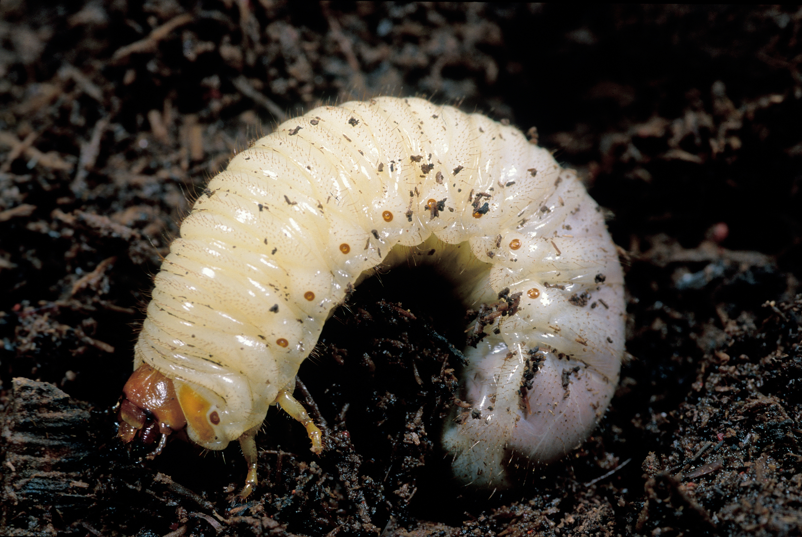
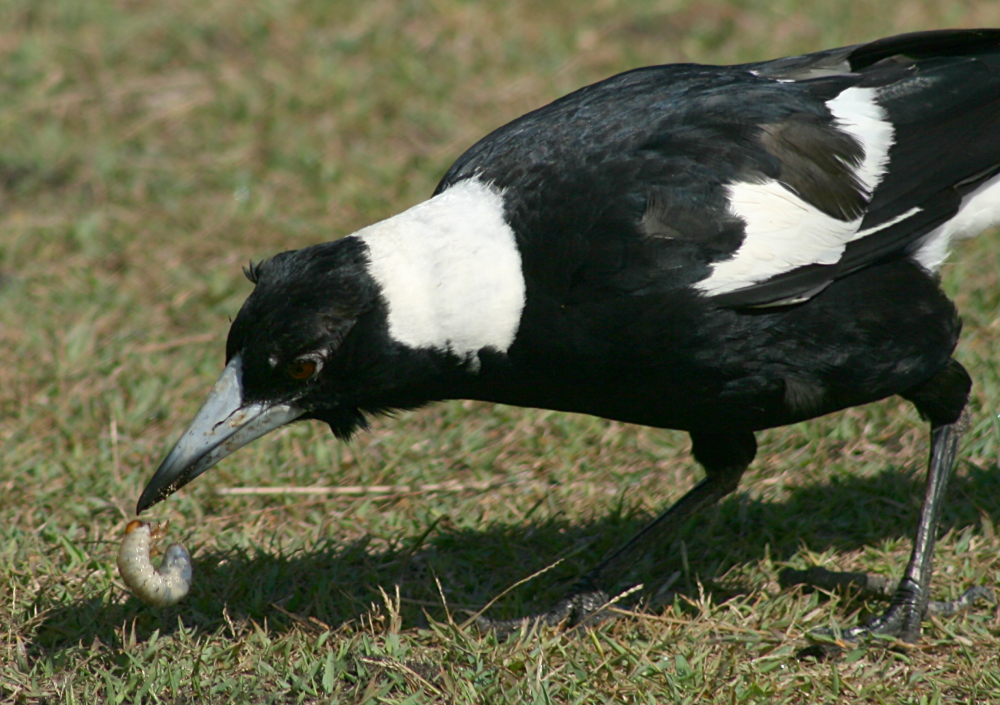
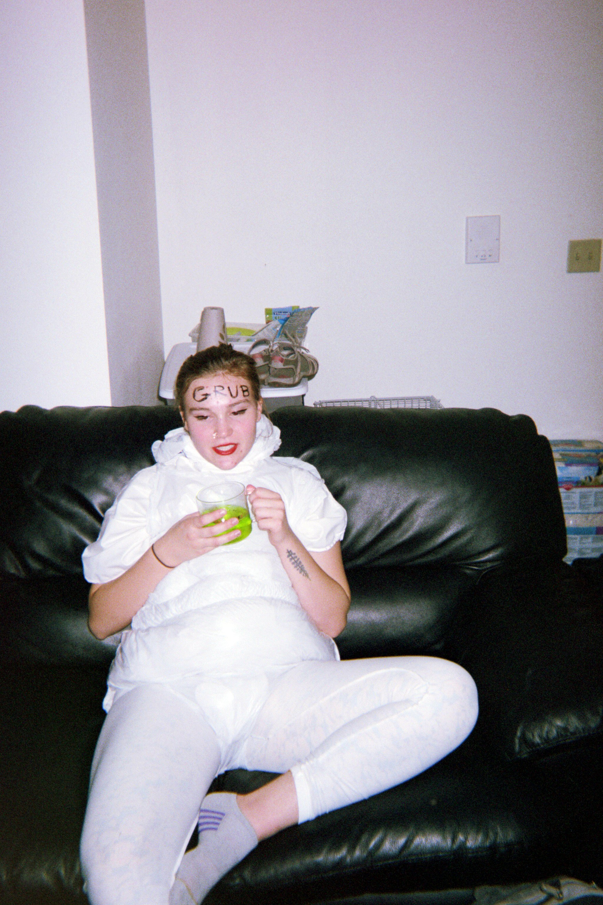

I am the one and only ✿ GRUB ✿ and this is a blog all about my ✨ GLAMOROUS ✨ life
Who am I?
As I've already mentioned, I'm The Grub. I know that this can be confusing. Typically, when people think of a grub, they think of something like this:
 ← (that's my cousin gerry)
or, maybe, something a little more gruesome, like this↙
 (gerry had a short life ☹) However, I'm not your typcial garden pest...I'm an low-species CELEBRITY! A young, vibrant larvae full of personality and potential (not to mention ravishing good looks) here to provide you with the hottest details on life, love, fashion, home decor, and much, much more! And, of course, I'm #1 in SNAIL GOSSIP!!!
me, ready to take over the world :)